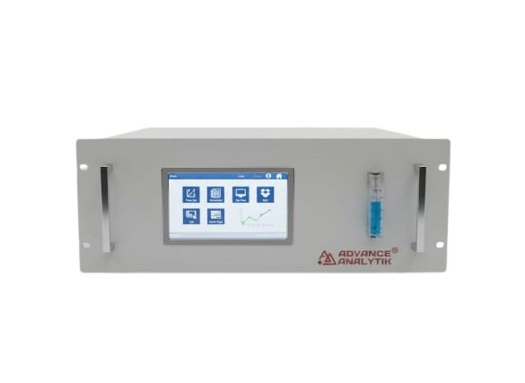
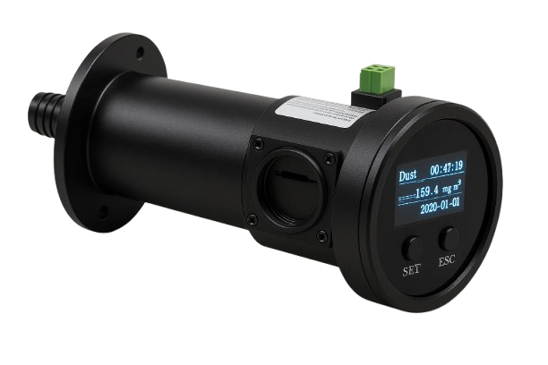
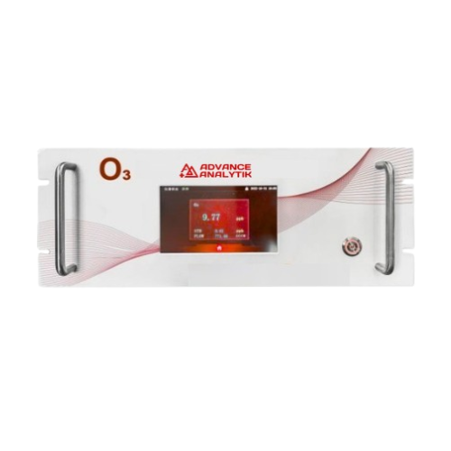
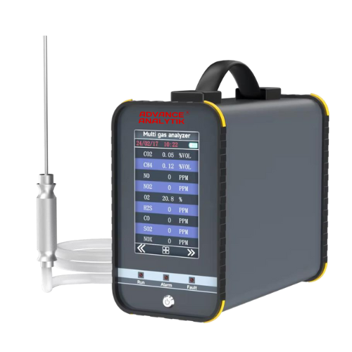

Gas Analyzers
Reliable Solutions for Continuous Emission & Process Monitoring
Gas Analyzers for Accurate Emission & Process Control
Advance Analytik® offers a robust range of gas analyzers designed for continuous and real-time monitoring of industrial emissions and process gases. Our gas analyzers deliver precise measurement of critical parameters such as SO₂, NOx, CO, CO₂, O₂, and other regulated gases to support environmental compliance and efficient plant operations.
Engineered for harsh industrial environments, our gas analyzers combine advanced sensing technologies with reliable data acquisition and seamless integration with emission monitoring systems. Whether for stacks, ducts, or process lines, our solutions help industries meet regulatory requirements while optimizing safety and performance.

Gaz CEMS
View Details
Gaz SPM
View Details
Gaz AQMS O3
View Details
Gaz PGA O3
View Details